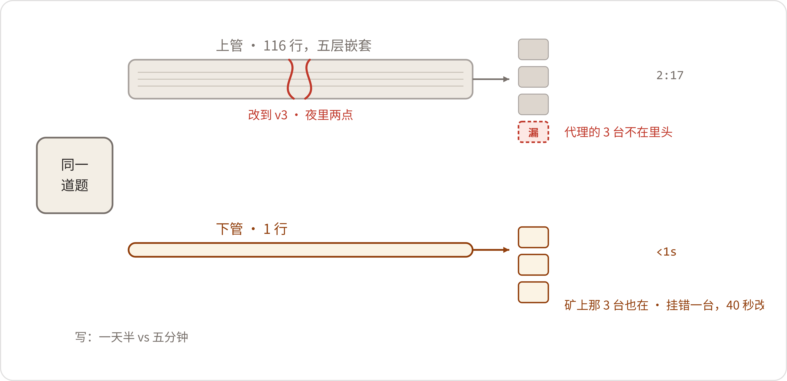

A Graph of Five Hundred Nodes
三月底他自己说的那句"查询要先把路修好"，赵峰自己难受了一个多月。五一假期后上班头一天，5月6日，赵峰进了数字办。他没坐，笔记本包往陈临桌上一放，从包里抽出一张折成四折的A3纸，展开，铺在桌面上，用手掌把折痕抹平。
纸的正面是一张表关联图，三月底画的，ERP、MES、质量系统三边的表，箭头一层一层往下串。他翻过来，背面朝上——那一面写的是倒查的链条：轴承批次、装配记录、整机序列号、销售订单、物流单，一行一个框，框和框之间拉着箭头。有三个箭头描过第二遍，笔道比别处粗。
"这张纸在我桌上压了一个多月。"赵峰说，"每天路过看一眼。今天想明白了，来找你。"
"想明白什么？"
"老陈，给我三周。"他的手指按在纸边上，"我去把那个图数据库装起来。Neo4j，社区版，不要钱，机器用机房里淘汰的那台。安装包我上礼拜就下好了。"他顿了一下，报了个日子，"三周，5月27号，我拿东西给你看。"
角落里，小夏的椅子转了过来。她那阵子白天盯文档库的清单，听见这个词，手里的笔停了："Neo4j？我读研的时候用过，存小说人物关系的，社区版我装过两回。"
"人物关系？"
"毕设的玩具，几百万条边那种。"她说得很快，"导入脚本我也能写。"
"脚本找你。"赵峰说完，转回来对着陈临，"别声张。"
陈临看着那张纸。背面的链条他见过——四月底复盘会上，赵峰就是把这页纸的内容讲给他们听的：能查，但每改一回问题，路就得重修一遍。
"你不是说过，这种事加两张表写好SQL就行？"
"那话我三月里就收回了。"赵峰把纸重新折起来，折得很慢，"老陈，跟你说实话。我不是替你打仗，也不是给谁看新花样。我就是不服气。白板上那句'查询要先把路修好'，是我自己说的，说完难受了这些天。十一年的手艺，输给一句'问题会变'，输得我看不明白。图要真能接住会变的问题，我得知道它凭什么。接不住——我死心，往后谁再提图，我第一个呸。"
"丑话说前头。"陈临说，"四月的三个坑你都在场。别弄出第四个能演示、不能用的。"
"我就是要试试，它到底是不是第四个。"
陈临给郑敏打了电话。话筒里她的声音混着车间检验的动静，人就一句话："两个钟头，多一分钟没有。问名字的时候叫我。"
赵峰把A3纸收回包里，出门前又站住："这三周，别问我进度。问了我也是仨字：在弄。"
第二天晚上，他从机房那台淘汰的台式机上清出一块地方，装了Neo4j社区版。机器旧，内存条是从报废服务器上拆下来插上去的，风扇一转就响。装完，他在数字办的小群里发了张截图，配了四个字："坑挖好了。"
真正的活从导数据开始。ERP导一遍，MES导一遍，质量系统再导一遍，三份表加起来五千三百多行，用Cypher自带的LOAD CSV，一份一份往里灌。赵峰原本估两晚上，实际干了一个星期——数据本身跟他作对。
头一关是编码。2023年3月，公司改过一版物料编码规则：老编码五位数字，新编码前头挂供应商码，中间插两位类别码。MES里3月前后的工单一边一套，ERP里又是一个格式，中间靠一张对照表——表是2019年建的，历年还有人零星补着，二三年换了编码规则，就没人管了，新增的料号一栏全空着。他把空栏一行一行往下补，补到二十几行的时候，出去抽了根烟，回来站在屏幕前骂了一句：
"十一年。我给这堆主数据打了十一年的补丁。"
骂到第三天，小夏听不下去了。晚上她抱着电脑坐到机房来："赵工，规则给我，剩下的让机器干。"四十分钟，她把映射脚本写完；几千行对下来，异常挑出四十几行，剩下的归赵峰手工过。过完他在群里发了第二句话："脚本是好人。"
第二关是批次。MES的工单里，轴承批次一栏空着的，三月郑敏翻到过两台；赵峰把半年的工单全对了一遍，空的其实有九台。
陈临打开资料柜，从最底层抱出三月从装配车间拿回来的那几本装配记录簿——当时说要还，一直没还，本子里还夹着三月写的便签，字迹淡了。赵峰接过去掂了掂："你们数字办，借书是不还的。"
两台的答案在记录本里，白纸黑字。另外五台，他抱着本子下车间，找当年的班组长一个一个问，问完再翻记录核，核得上了，才把批次号一笔一笔记进自己的表里。最后两台，怎么都补不上：一本的当月那页让油渍糊了半边，另一本的批次栏当年就没填。九台补上七台，剩两台，赵峰在图里照建了节点，边上没挂线，孤着。
第三关是华信。供应商名单导出来，"华信轴承""HX-ZC""华信传动科技"，三行，同一家公司。三月底他给十九张订单对过公章，这回不用对了——他把三个名字合成一个节点，名字全挂在节点的别名栏里。
"看见没有。"他跟来看进度的陈临说这个的时候，鼠标点着那个节点，"在SQL里，这仨得建对照表，建完还得有人养着——供应商改名、新增、注销，都得有人跟。图里，一个圈，仨标签。当然——"他自己把话接了下去，"现在也没人养。这回是我手工合的。华信哪天再改个名，我得再干一遍。"
第四关，是图上离机器最远的那几类点。华信2023年初改热处理的事，确认过程在采购员和对方质量工程师三年前的往来邮件里。赵峰把邮箱翻出来，一封一封找，把那份《工艺更改通知单》的编号抄下来，做成一个节点，节点上挂着档案室的调档号——号是郑敏给的，三月她调过档。七张进厂检验报告，从质量系统导出来，一张挂一个批次节点。终端客户那一头，ERP里只有发货对象；他去了趟销售部，找周建海手下管台账的内勤，打了两年的台账出来。内勤一边打一边问要这个干嘛，他说追溯用，对方"哦"了一声，多问了一句："要不要连意向客户一起打？""不打。出厂的。"
郑敏答应的两个钟头，分了三回用，问的全是这种地方：这个数从哪来、那句话谁说的、哪份单据算数。有一回问完，她合上本子说了句："你这个活，三分技术，七分对账。"
有一晚陈临去机房，看见他蹲在机柜后面理线，屏幕上开着三份表。赵峰直起身来，说了句话："三月里，郑敏翻一个半小时对上四台。我这一个礼拜，干的是同一件事——就是不用本子抄，用脚本。系统还是那些系统，脏还是那些脏。"
五月中旬，数据备齐了：2023年上半年出厂的JS-1100，二百八十五台；装配批次、轴承批次、采购订单、销售订单、供应商、客户、进厂检验、工艺变更，一样一摞。剩下的，就是给它们定规矩。
5月20日晚上八点。数字办的白板边上还贴着三月那张A3表关联图，胶带印黄了。赵峰在白板另一头写字：供应商、轴承批次、装配批次、整机、客户。词写完，他从"供应商"往"轴承批次"拉第一条线，笔尖悬在线的中间。
郑敏真来了。电话里说好的，问名字的时候叫她。她坐在会议桌那头，台账摊在膝盖上，笔先搁着，不看人，看白板。小夏也在，为文档治理的活加着班，端着杯子过来旁听。
"这条叫什么？"他先问自己。
"供应。"他自己答了，"供应商到批次，供应。这个没歧义。"
郑敏头没抬："行。下一条。"
整机到客户，他写了个"发货"。
"为什么是发货？"郑敏抬起头了。
"出库单上的动词。货出我们库，发货。ERP就这么记的。"
"从矿上那边看，这叫购买。从合同上看，这叫销售。"她把台账合上，往桌上一放，"你写'发货'，三个月以后新人来看这条线，只知道货发去了哪儿，不知道出了事找谁。"
"那我一台机器挂三条边？发货、销售、购买，一件事说三遍？"赵峰的笔在白板上点了两下，"线是拿来查的，不是拿来讲道理的。"
"你先说，追溯的时候，你用哪条。"
赵峰没马上答。他把笔帽咬开，又扣上，才开口："发货。出了质量的事，头一件事是圈范围——货发给了谁，谁手里有风险。"
"那就写发货。"郑敏说，"走代理的呢？"
白板前静了一下。这正是三月底那条SQL卡住的地方：货发给代理，机器在矿上，发货目的地和最终用户对不上。
"……两条边。"赵峰慢慢写：整机—发货给—代理—发往—终端。写完回头，"终端的数据哪来？"
"周建海他们内勤的台账。ERP里没有。"
"我去再要一版。"
再往上是工艺变更。他念叨着写："华信改了热处理，变更单是采购收的，作用在那几批货上。这条叫什么？'变更'？'适用于'？单据是人家的通知单，通知的是我们，落到货上，算什么？"
郑敏想了想："按单据叫。通知单，就叫'变更通知'。别在线上写小说。"
"那别的也照此办理？"赵峰拿笔杆敲了敲白板。
"照此办理。什么单据，落什么边。"郑敏把本子翻开，一条一条记，"装配口的不用吵——MES的领料栏怎么写，边就叫什么：领料叫领用，工单合拢叫装配成。先这么用。用着别扭，再吵。"
"在图里改个边名，我一条命令的事。"
"名字你随便改。"郑敏头也不抬，"账别记错。"
角落里，小夏举了下手，问了个问题："那宏峰的投诉，要不要也连一条线？'投诉'。"
"投诉是对着十一台一起来的，不是对着哪一台来的。"郑敏说，"你这个节点，粗细就没分对。演示用不上，先不连，记下来。"
小夏"哦"了一声，把杯子放下，在本子上记了一笔。
吵完这一场，白板右下角多了一小块字，是郑敏走之前顺手抄上去的：
人散的时候快十点。陈临送走郑敏回来，办公室只剩他一个。他走到白板前站了一会儿，看赵峰写的那些词。然后他拿起白板笔，在板子最底下另起一行，写了两个词：华信轴承，JS-1100。两个词中间，他拉了一条线，线当中写了两个字：供应。
写完，他把笔搁回槽里，关了灯，摸着黑走出办公室。
5月26日，老蔡下到了机房。
没人通报。赵峰从屏幕后面直起身的时候，老蔡已经站在那台嗡嗡响的旧主机旁边了，手里捏着个小本。"这台机器，哪来的？"
"机房淘汰的。内存条也是报废服务器上拆的。"赵峰说，"没花钱。"
"软件呢？"
"开源的社区版，不要钱。"
老蔡在本子上记了两行，合上。他往门口走，走到一半又回头："我就是来看看，三百四十万之后，你们还跟不跟我要钱。"他站了两秒，"6月30号我到场。拿什么交，你们自己想好。"
人走了，机房里就剩风扇声。当晚赵峰在群里发了句话："审计都下机房了，都上点心。"
5月27日，三周期满。晚上七点，赵峰把陈临和小夏叫进机房。旧主机的显示器上，图灌完了：五百一十七个节点，一千九百多条边。机房里没开空调，那台旧主机的风扇从傍晚一路响到现在，赵峰衬衫的后背洇出一片深色。二百八十五台整机，一台一个圆；华信那几个批次居中，线从批次散出去，连向一台一台机器，再从机器连向客户，客户再连向订单。
"五百出个头。"赵峰移动鼠标，点在一个批次上，连着它的线一根一根亮开，"丑话说前头：里头有两台是断线的——数据本来就没有，不是我偷懒。范围就到2023年上半年，机型就JS-1100，多一台我都没建。"
小夏凑近看那两台孤零零的圆，问："演示的时候抽到它们怎么办？"
"抽签的清单，一台不少，包括那两台。"赵峰说，"缺的就说缺。"
陈临看了一阵，问："六月底，敢不敢上台？"
"敢。"赵峰把鼠标放下，"话得按我说的说——范围、日期，一条不许吹。"
6月5日，数字办把小会议室占了。赵峰把机房那台旧主机搬上来，接了个显示器，摆在桌子右边；他自己的笔记本连着ERP，摆在左边。他把两台机器往桌子中间一并。
"又来。"小夏在旁边说了句。
"闭嘴。"
郑敏坐对面，本子摊开，台账打印件压在本子底下。她说过，今天不排练。
"我问，你答。"她说，"2023年3月以后，同期那几个批次，还装进了哪些出厂机器，发给了谁。"
赵峰在左边电脑上开了一个文本文件，文件名叫"倒查v3"。"三月底写的。四月里郑工改了两回问法，我跟着改了两回，改到v3。"他把整段查询贴进ERP的窗口——一百一十六行，五层嵌套。按下执行，他往椅背上一靠，手指在桌沿上敲。
查询跑了两分十七秒，结果出来，五十行。"这还是加过索引的。"赵峰补了一句，语气平平。郑敏的手指从第一行往下走，走到第三十几行停住，往前翻了一页，又翻回来。
"少了三台。"她抬起头，"走恒达机电代理的那三台。你这里客户栏写的是代理公司——我问的是，发给了谁。"
"SQL就这么多。"赵峰说，"发货对象是代理，终端用户不在库里。三月底我就说过，这个窟窿我填不上。"
郑敏不接这茬，朝右边那台机器抬了抬下巴："那个。"
赵峰把右边的屏幕转过来一点，敲了一行：
他按下回车，屏幕跳了一下。同期那几个批次，这一行他挨个跑，结果并到一起、去掉重复，五十三行；头一个批次出结果，不到半秒。最后三行的客户栏，是矿上的名字。
郑敏拿台账一行一行对。对到倒数第二台，她停了："这台挂错了。它不走代理，直销的。"
赵峰凑过去看了一眼，伸手抓过鼠标，删了一条边，重新挂上另一条，前后四十秒："好了。"
"对。"郑敏在那一行打了个钩。她又抽出三台，当场给段兴打了个电话核内蒙古那台，电话那头风大，段兴喊着报了矿名和皮带线编号，跟图里对得上。另外两台，她对了自己本子上的旧账。
核完，她合上台账，想了想，又开口："再问一个。这五十三台里，发矿山的，除了宏峰，还有几家？"
赵峰看了一眼左边那台电脑，盯了几秒，把笔记本的屏幕合下来一半。
"这个SQL答不了。"他说，"客户行业，ERP里压根没这个字段——不是查得慢，是数据不在库里。"
右边屏幕上，他在那行查询的末尾添了半行，把客户身上挂的行业筛了一下。十几秒，结果出来：四家。两家在晋北，一家在赤峰，一家在铜川。
郑敏对台账点了头，没说好，也没说不好。她翻开本子写了两行字，写完，抬头看着赵峰："台账是五月底导的。周总的人天天在外面跑，名单月月都在变。下个月呢？"
赵峰没接话。会议室里静了一阵，空调的风声都听得见。
"把丑话说在前面。"还是赵峰先开的口。他坐直了，两只手交叠放在桌上，"今天这个对比，出去别吹图比SQL快。五百来个节点，搁谁的机器上都快——SQL真搁测试库跑，也就几秒。今天差的不是秒数，是两样。第一，写。她这个问题，SQL我写了一天半；四月里她改两回问法，我跟着改两回，一回改到夜里两点，第二回我直接跟她说，下回能不能先把问题想全了再问。图那一行，五分钟。第二，改。她刚那句'发矿山的还有几家'，SQL不是跑不动，是没法答，因为台账它够不着。图里能答——因为台账是我手工挂进去的。"
"这句我记下了。"郑敏在本子上又添了一笔，然后合上，"演示我签字。范围之外，一个字别多说。"
一直没怎么说话的陈临，这时问了一句："这套东西，除了上台演示，郑敏平时自己能用吗？"
郑敏看向演示机，又看向赵峰："能用。就是他得在边上。现在这台机器上的东西，全厂就他一个人说得清。"
赵峰没接这句话。他把右边屏幕转回去，弯下腰去收桌上的线。
散场的时候，小夏帮着收线，问赵峰："以后是不是所有查询都用图写？"
"月底算成本、盘库存，还是SQL的。"赵峰把电源线缠了两圈，这回缠好了，"图管的是今天这种事——问题问的是谁跟谁有关系，路还不知道长什么样。"
6月24日下午，彩排定在大会议室。验收日也定在这间，投影、幕布、座位都按当天的样子摆。彩排的人到齐：陈临、郑敏、赵峰、小夏。
流程从头走。陈临的开场一分钟，口径照稿念：范围，2023年上半年出厂的JS-1100；数据截至5月31日。开场之后是问答预案，他们拟了七个董总可能问的问题，一问一答写在纸上，赵峰过目了一遍，划掉两个："这两个别留。答了就是吹。"然后是重头戏。郑敏递过去一沓打印纸——二百八十五个序列号，抽签用。小夏闭着眼抽出一张，展开，念："2304289。"
赵峰在演示机前敲下序列号，按下回车，节点亮了。他点开装配批次，批次连着轴承批次，轴承批次连着供应商，供应商底下挂着那条"变更通知"——点开，是华信那轮热处理变更，变更单号，档案室的调档号，一样不少。
从敲回车到整条链走完，机器的部分不到两秒；加上他讲，一共两分钟。投影上那几根线一根一根亮开的时候，屋里没人说话。
"三月里这一趟，"郑敏先开口，"我自己走，要一个下午。"
这是她那天说的唯一一句评价。她收拾包，收到一半，又站住了："演示那天，要是有人问一句'这个月新到的货呢'——你这图里，最新的批次停在几号？"
赵峰看了一眼屏幕边角上自己贴的便签，念出来："5月31号。"
"你自己看着办。"郑敏拎着包走了。
当天晚上，赵峰没回家。6月新到的两个轴承批次——华信一批，南方一家老供应商一批——他从ERP里导数据，过编码：新料号又冒出来一个，对照表里没有，他手工补了两行。然后建批次节点，连供应商，再把6月车间领用工单一张一张过手：新装配的单子出了范围，不挂；挂上去的几张是售后换件——新到的轴承装回二三年的老机器，线正好接在旧整机上。中间下楼吃了碗泡面。十一点半，他给两个新节点标了颜色，跟旧批次区分开。凌晨一点四十，核对完，他把屏幕边角的便签换了一张，上面写：数据截至6月24日。
临走，他数了一遍：五百一十九个节点。多出来俩。
第二天早上七点四十，小夏到的时候，数字办的灯已经亮了。赵峰坐在演示机前，眼睛红的，桌上两杯豆浆，一杯已经空了。
"你买的？两杯？"
"给你带的。"赵峰把另一杯往桌边推了推，等她坐下，才把椅子转过来，"彩排是过了。我说句泼冷水的，你听着。"
小夏捧着豆浆，没喝。
"现在这东西，是个会表演的库，不是系统。"赵峰说，"演示拿的是快照，6月24号的快照。新批次每周都来，台账月月都变。昨晚那两个，是我一个键一个键敲进去的。下礼拜再来俩，我还敲。下个月我休假呢？它就停在那儿，不长数。"
"那……要怎么办？"
"要么，有人守着喂。要么——"
他端起豆浆喝了一口，没往下说。小夏等了几秒，没等到下文。
八点过，郑敏到了。进门先看演示机，看见便签上的新日期，点了下头："演示归演示。口径我来写——范围、截止日期，白纸黑字，打在第一页。"她又问，"验收那天，机器谁碰？"
"谁也不许碰。"赵峰说，"我守着。"
九点，陈临也到了。小夏把早上的话简单学了一遍。陈临走到演示机边上，看那两个新标了颜色的节点，看了半分钟。
"三十号以后呢？"他问。
"三十号以后的事，三十号以后再说。"赵峰头也没回，"先把这关过了。"
6月29日，验收前夜。楼里人走空了，赵峰还在。
他把整张图导出成备份文件，拷了三份：一份装进演示用的笔记本——万一主机当场出岔子，笔记本顶上；一份拷进移动硬盘，锁进机柜；第三份，他揣进自己包里，带回家，家里那台旧电脑上也留一份。拷完，他在演示机上把彩排抽中的那台2304289又走了一遍。整条链完整，一节不少。他把投影关了，屏幕留着，那张图还在上面：五百一十九个圆，两千来条线。
关灯之前，他对着屏幕说了一句，声音不大：
"明天别掉链子。"
灯灭了。他锁上门往走廊走，走到头，回头看了一眼——数字办黑着，只有墙角那台旧主机的指示灯，还在一下一下地闪。

验收前夜，替这一个月记几笔。主角是赵峰，我只在边上看：